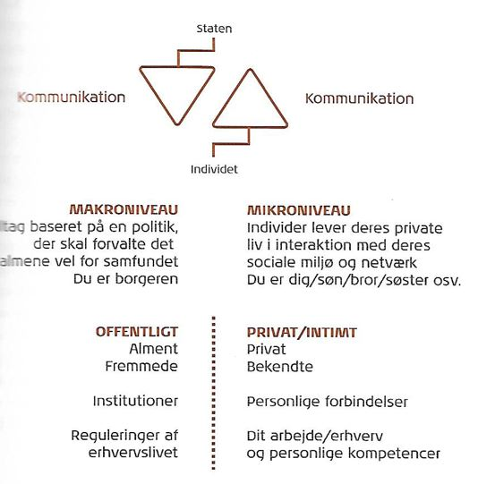

Illustration

Figur 4.1 Mikro- og makrosociologiske sfærer:
I ovenstående figur, kan man se hvordan mikro- og makrosociologien spiller en afgørende rolle for individet. De to pile øverst viser, hvordan individet kommunikerer til staten, og omvendt. Samtidig kan man se en adskillelse af grupperne i samfundet. På det makrosociologiske niveau indgår institutioner og fremmede, hvor det mikrosociologiske niveau omhandler det private og de personlige forbindelser m.m.
KILDER:
KIM 2. udgave, Hans Reitzels forlag, kapitel 4, side 55 FIGUR: 4.1 Mikro- og makrosociologiske sfærer
KIM, 2. udgave, Hans Reitzels forlag kapitel 4, side 53
Giddens teorier om senmodernitetens dynamik.
Adskillelse af tid og rum:
På baggrund af den teknologiske udvikling kan vi nu kommunikere med vores sociale relationer, såsom familie, venner og bekendte, over store afstande og nødvendigvis ikke stå ansigt til ansigt med dem. Samtidig kan vi, som individer også hurtigt få nyheder via nettet, da den teknologiske udvikling gør dette muligt. Internettet gør det muligt og nemmere for os, at finde nogen der interessere sig for det samme som en selv.
Udlejning af sociale systemer
Her udpeger Giddens to udlejringsmekanismer, der har påvirket især det vestlige senmoderne, sociale liv og vaner i høj grad.-
Skabelsen af symbolske tegn
Indenfor dette abstrakte system, er der tale om symbolske tegn, såsom penge. Penge er et udvekslingsmedie, der passer mellem individer og institutioner. Symbolske tegn bryder med rumopfattelsen og muliggør, at individer kan handle med hinanden, uden at mødes. -
Skabelsen af ekspertsystemer
Den anden del af det abstrakte system er ekspertsystemer, som vi dagligt omgiver os med. Den moderne verden gør, at vi er nød til, at stole på det abstrakte ekspertsystem, såsom, lovgivning, teknologi osv. Eksempelvis udlejres sociale relationer såsom børneopdragelse til ekspertsystemet, hvor det er ”eksperter” der nu tager del i barnets opdragelse og indlæringen af sociale normer og værdier.
Giddens mener, at tillid er vigtig for at skabe et grundlag for samfundets opretholdelse. Giddens opstiller to former for tillids-relationer. Det første er ansigt til ansigts tillidsrelationer, hvor man konkret møder hinanden og opbygger en tillid. Denne form for tillidsrelationer var i centrum i det traditionelle samfund. En anden type tillids relationer er ansigtslæse-relationer, som opstår som følge af vores tillid til samfundets abstrakte systemer. Denne form hører til i det moderne samfund. Her stoler vi på ekspertsystemer – man stoler på, at mekanikeren har ordnet ens bil. Vi løber en risiko når vi stoler på eksperterne, men det er en risiko vi vælger at leve med. Sociale udlejringsmekanismer er en forudsætning for det moderne samfund som vi har i dag.
Øget refleksivitet:
Moderniteten står ikke i skærende kontrast til traditioner, men som moderne menneske ved man godt, at der findes mange andre alternativer til ens ståsted kulturelt, socialt og geografisk. Det gør, at vi mennesker tænker sociologisk. Det betyder, at vi konstant reflektere os selv med vores omgivelser for, at denne vores identitet. Ved dels at skille traditionerne eller ved at træde i karakter som et unikt individ.
Med den øgede refleksivitet reflekterer vi som enkelte individer konstant os selv med vores omgivelser for at danne vores identitet. Man skal overveje og træffe sine egne valg. Denne indvendige-mentale, sociologisk tankegang er grunden til, at Giddens kalder senmoderniteten for radikal. Med radikal menes der, at intet er givet og at vi som individer selv kan skabe vores tilværelse baseret på de strukturer vi lever efter.
Kilder: Torben Larsen, Anne Mette Busch m.fl. Kommunikation i multimediedesign (KiM), 2. udgave, 2015, Hans Reitzels Forlag, ISBN 13: 9788741261683, s. 57.
To analysemetoder af medier og samfund:
Når man benytter sig af mediesociologi, som teori til analyse og metode kan man vælge en social virkelighed som er knyttet til medierne, og undersøge den vha. mediesociologi. Der findes to metoder man kan bruge, til at finde strategiske valg i en kommunikationsplan samt bruges det også til ens design af medier.
De er følgende:
1. Praktisk-analytisk tilgang via tematikker:
- Kan have forskellige formål
- Medier, mennesker, kultur, samfund osv. skal sættes i forhold til den tematiske vinkel
- Der findes forskellige tematiske vinkler:
- Magt:
bruges ofte i forhold til de statslige medier - her undersøges magten, som påvirkning via netværk, eksempelvis påvirkningen fra mediernes side af befolkningen ovenfra. Man kan også undersøge en påvirkning nedefra ved, at undersøge hvordan befolkningen kan påvirke staten. - Udtryksform:
Her undersøges udtryksformerne såsom teknologi, kultur, genrer og effekter. Dette er noget, der er skabt ovenfra af eksempelvis nyhedsmedier, som skaber en modtagerkultur. Man kan samtidig undersøge det nedefra - eksempelvis ændringen af medievaner og dermed ændres kulturer og genrer.
- Magt:
- Dette er en akademisk tilgang
- Arjun Appadurais teori om scapes, også kaldet ”landskaber”.
- Tilgangen er god til komplekse analyser af målgruppen
- Giddens begreber bliver anvendt analytisk.
- Appadurais mener, at verden er formet af mennesker, og siger at kulturen er et produkt af menneskets kreative og praktiske imagination.
- Ingen objektiv virkelighed
Senmodernitetens globale steder og menneskerne, der bor der, kan analyseres ud fra scapes (landskaber): der findes 5 scapes, dog forklaret nedenfor enkeltvis, men de kan ikke adskilles helt. Undgå dog, at bruge scapes-tilgangen til de opgaver, som har enkle problemstillinger eller evalueringer.
-
Ethnoscapes:
Handler om grupperinger i interesser, migrationsmønstre, global politik, turisme og netværk. Her spørges ind til hvad nationalitet/etnicitet er for hvem. -
Technoscapes:
Handler om teknologien. Her spørges ind til hvad teknologi betyder for målgruppen på mikro- og makroniveau. -
Mediascapes:
Handler om medietyper. Her spørges ind til hvad de forskellige typer medier gør for hvem (mikro-makro). -
Ideoscapes:
Handler om ideologier. Her spørges ind til hvilke ideer, interesser og værdier, der kendetegner det fokuspunkt for enten en kompleks målgruppe eller en ensartet gruppe. - Financescapes: Handler om finansielle værdier, aktiver og ressourcer. Her spørges ind til, hvad der er vigtigt af finansiellefokuspunkter for målgruppen og hvordan økonomien fordeles og kommunikeres.
Design- og kommunikationsstrategi via mediesociologi:
Hvis man gør brug af en social mediestrategi, skal der tages hensyn til hvad målgruppen foretrækker af brugerdesign. Der stilles en række spørgsmål indenfor specifikke emner, som kan danne et grundlag for kommunikations- og designstrategi som lyder således:
- Teknologi: Gør teknologien at folk får muligheden for at kommunikere på nye måder?
- Tilmelding/followers: Kan man blive en del af en medieplatform nemt og hurtigt? Skal mediet koste noget?
- Design/brugererfaring: Er designet nemt at bruge for målgruppen?
- Magt/netværk:Kan mediet flytte magten fra institutioner til privatpersoner (mikro-makro)
- Indhold/fællesskab: Deler fællesskabet nok indhold? Knyttes folk sammen af interesser og netværk?
- Forretningsmodel: Åben platform? Er det open source eller kommercielt?
Den sociale teknografikprofil:
- En person i brugerrollen af sociale medier har mange roller og aktiviteter
- En brugerrolle kan lave mange forskellige ting på nettet, eksempelvis gå på Youtube, anmelde
- Man skal gøre brugerrollerne enklere hvis man skal vide noget om ens målgruppe og hvilke aktiviteter der skal til.
- Modellen er analytisk og praktisk
- Bruges til at analysere og evaluere roller i målgruppen. Her benyttes kvalitativ analyse
- Ved den rigtige content finder man ud af målgruppens netværk og deres interesser og kan bruge det i kommunikationsstrategien
Torben Larsen, Anne Mette Busch m.fl. Kommunikation i multimediedesign (KiM), 2. udgave, 2015, Hans Reitzels Forlag, ISBN 13: 9788741261683, s. 63-64.
KIM, 2. udgave, Hans Reitzels forlag kapitel 4, side 53
KIM, 2. udgave, Hans Reitzels forlag kapitel 4, side 53
https://da.wikipedia.org/wiki/Mediesociologi
KIM, 2. udgave, Hans Reitzels forlag, kapitel 4, side 54
KIM, 2. udgave, Hans Reitzels forlag, kapitel 4, side 54
KIM, 2. udgave, Hans Reitzels forlag, kapitel 4, side 54
KIM 2. udgave, Hans Reitzels forlag, kapitel 4, side 55 FIGUR: 4.1 Mikro- og makrosociologiske sfærer
KIM 2. udgave, Hans Reitzels forlag, kapitel 4, side 55, Globalisering
KIM 2. udgave, Hans Reitzels forlag, kapitel 4, side 56, Globalisering
KIM 2. udgave, Hans Reitzels forlag, kapitel 4, side 56, globalisering
Torben Larsen, Anne Mette Busch m.fl. Kommunikation i multimediedesign (KiM), 2. udgave, 2015, Hans Reitzels Forlag, ISBN 13: 9788741261683, s. 57.
Torben Larsen, Anne Mette Busch m.fl. Kommunikation i multimediedesign (KiM), 2. udgave, 2015, Hans Reitzels Forlag, ISBN 13: 9788741261683, s. 59-61
Torben Larsen, Anne Mette Busch m.fl. Kommunikation i multimediedesign (KiM), 2. udgave, 2015, Hans Reitzels Forlag, ISBN 13: 9788741261683, s. 63.
Torben Larsen, Anne Mette Busch m.fl. Kommunikation i multimediedesign (KiM), 2. udgave, 2015, Hans Reitzels Forlag, ISBN 13: 9788741261683, s. 63-64.